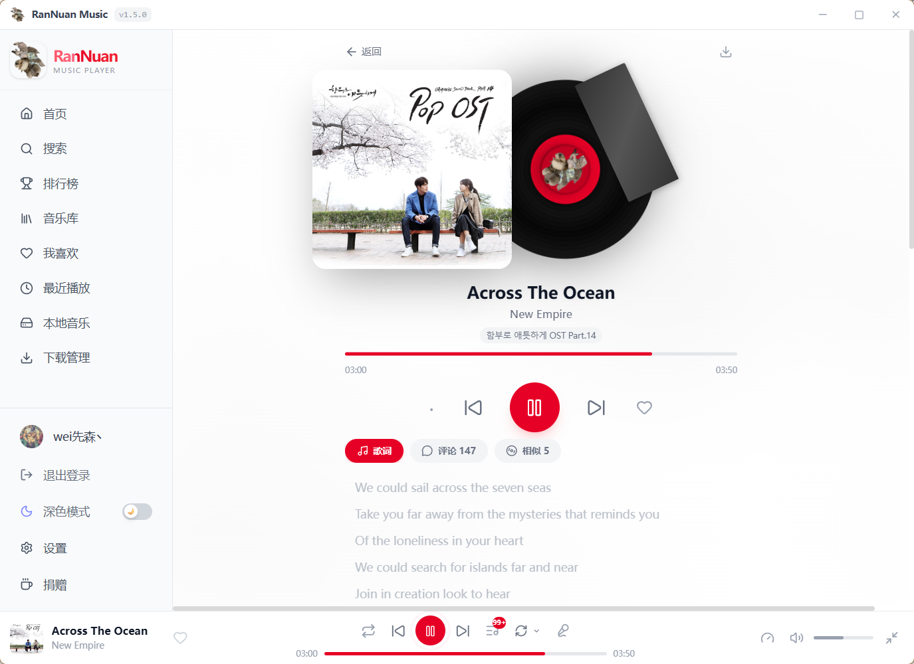
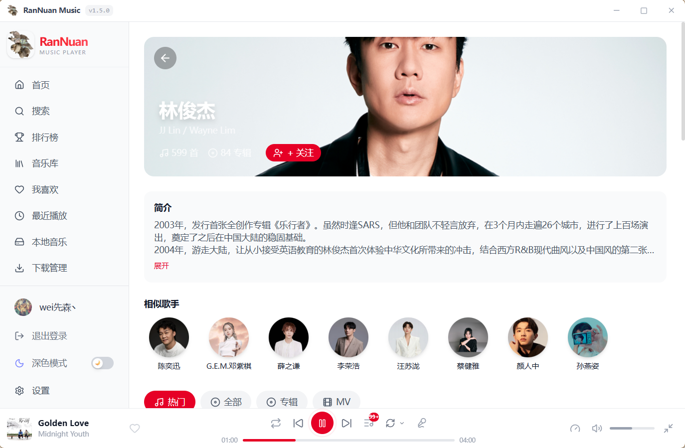
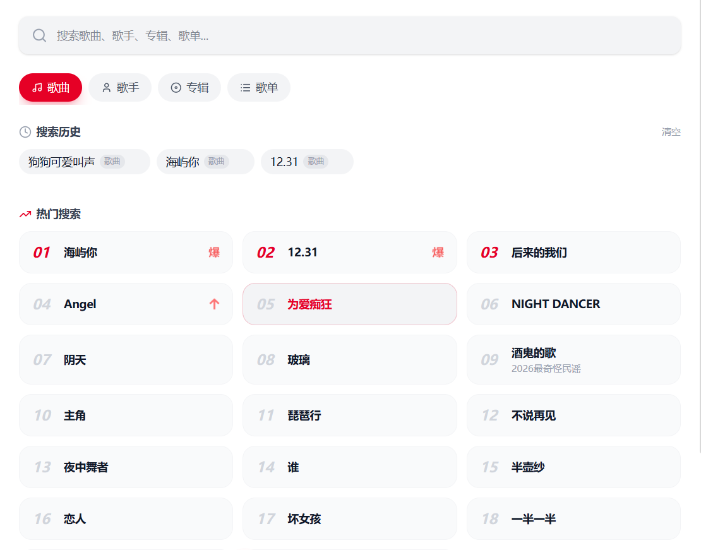
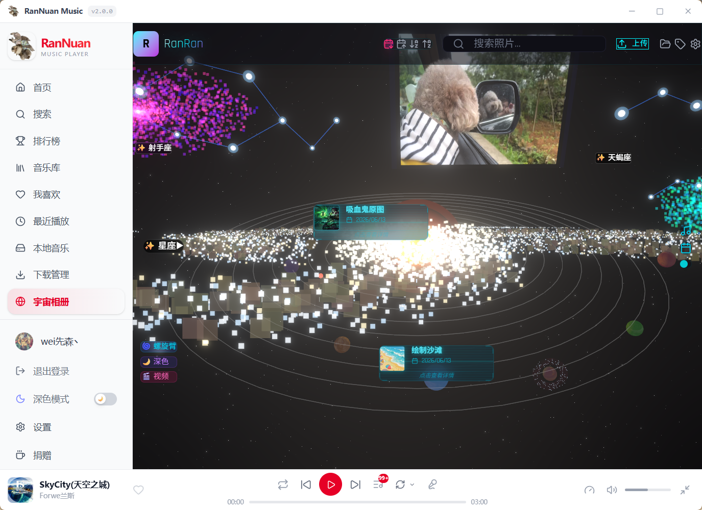
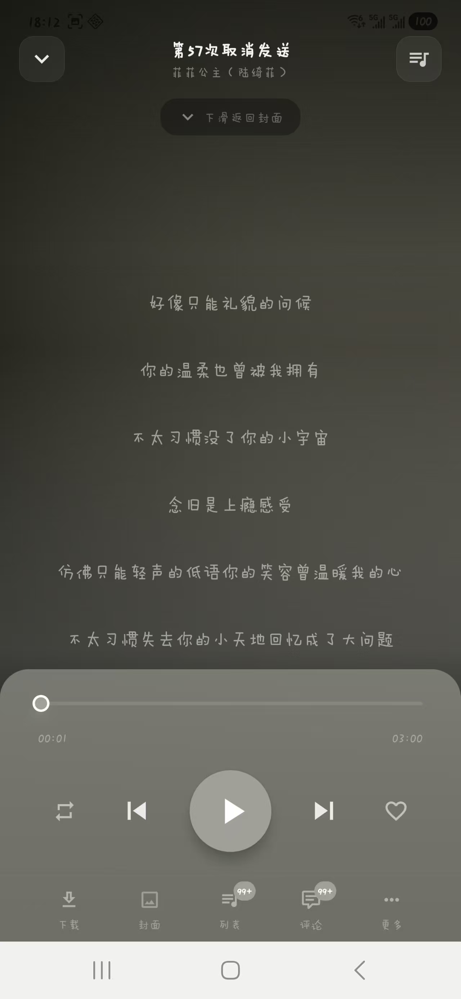
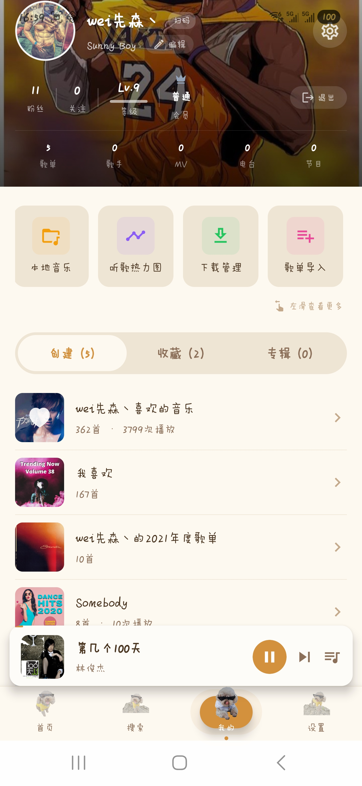
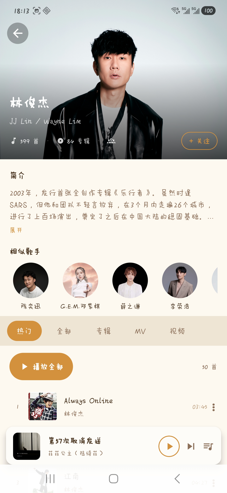

3D 宇宙相册 · RanRan
把你的照片化作环绕恒星的行星。Three.js 实时 3D 渲染，Bloom 后处理特效，6 种赛博主题，全息影院——这不仅仅是一个音乐播放器。
3D 太阳系视图
每张照片映射为独立行星，公转自转 + 恒星光晕 + 日冕耀斑，真实天体物理视觉。
银河螺旋臂
4 臂螺旋结构按时间排列照片，2400 粒子渲染，太阳系/螺旋臂两种视图自由切换。
赛博全息影院
赛博朋克风格视频播放器，多视频列表切换，自定义控制条 + 鼠标 3 秒自动隐藏。
6 主题 + 5 渐变
赛博蓝 / 霓虹粉 / 矩阵绿 / 落日橙 / 星河紫 / 暗黑深渊，一键切换整个宇宙。
时光穿梭
按年份网格浏览照片，全屏沉浸式回忆视图，一键回溯你的每一个精彩瞬间。
情绪音乐推荐
AI 分析照片时间/季节/标签，自动匹配情绪音乐，每一张照片都有专属 BGM。
覆盖全场景的音乐体验
7 大音源聚合 · 桌面手机全平台 · 22+ 个页面模块
多源音乐解析
网易云 / QQ / 酷狗 / 酷我 / 咪咕 / 波点 / GD 7 大音源聚合，自动降级切换，多策略解析，再也不需要换 App 找歌。
实时歌词显示
逐行歌词同步滚动，翻译歌词支持，沉浸式听歌体验，支持桌面端悬浮歌词。
下载管理
并发下载队列 + 进度弹窗 + 打开文件夹，离线播放随时随地，断点续传不丢进度。
播放队列管理
下一首播放 / 右键菜单 10 项操作 / 拖拽排序 / 播放历史最近 200 首带时间戳。
多主题与深色模式
深色/浅色/跟随系统，iOS 风格 toggle 开关，个性化你的播放器视觉。
会话持久化
刷新/重启后自动恢复播放队列 + 歌曲位置，智能保持暂停状态，无感续播。
用户登录同步
支持网易云 / QQ音乐账号登录，同步个人歌单，收藏、评论一站管理。
智能搜索
防抖搜索建议 + 热搜卡片 + 搜索历史 + 键盘导航 + 全局 Ctrl+K 弹窗搜索。
歌曲详情页 桌面
毛玻璃黑胶唱片动画 + 歌词/评论/相似推荐，视觉与听觉的双重沉浸体验。
社交与分享
热门/最新评论双Tab、抱抱互动、楼层回复、举报、发布新评论，完整社区体验。
听歌热力图 桌面
年度月历网格 + 深浅绿色渐变，可视化你的听歌习惯，助你发现自己的音乐节奏。
播放电台 桌面
热门电台 / DJ 节目列表 / 电台详情页，支持分页加载与渐进渲染。
桌面端独特能力
Tauri 2.x 原生窗口能力，移动端做不到的这些事
系统托盘控制
最小化到托盘，右键菜单：播放/暂停 + 上/下一首 + 实时歌曲 tooltip + 显示/退出，不占任务栏。
全局快捷键
Space 播放暂停 / Ctrl+L 歌词 / Ctrl+D 桌面歌词 / Ctrl+K 搜索 / 媒体键支持。
桌面悬浮歌词
Ctrl+D 呼出悬浮歌词窗口，任意拖拽定位，透明背景不遮挡，沉浸听歌。
迷你播放器
窗口缩小至 360×72，悬浮桌面角落，不干扰工作，一键切歌。
启动动画
3 秒马卡龙配色开机动画 + 3D Logo 浮动 + 狗狗叫声，打开就是好心情。
本地音乐管理
IndexedDB 持久化本地音乐、封面自动匹配、歌单链接/文本导入、下载记录管理。
双平台技术栈
桌面端与移动端两个独立产品线，各自采用最优技术方案
桌面端
Tauri 2.x + React 19 + Vite 8
移动端
React Native + TypeScript + Expo
双平台界面一览
桌面端与移动端，同样精致的设计语言







双平台安装包
桌面端 Windows v3.8.6 已发布 · 移动端 Android v1.1.0 已上架
Windows 桌面版
点击展开网盘密码
网盘密码：RR2018
还有疑问？
快速了解冉暖音乐播放器
项目里程碑
桌面版 v3.8.6 已发布 · 更多功能持续迭代中